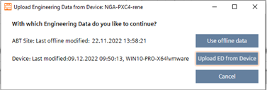
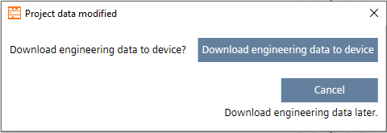
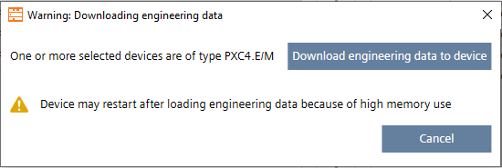
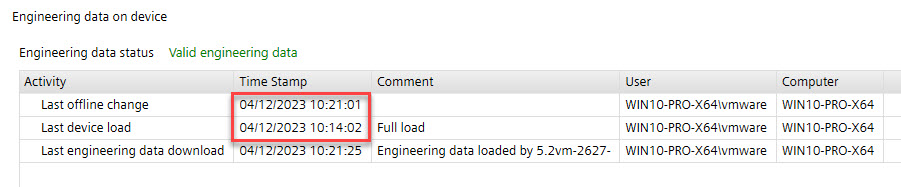
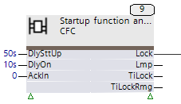
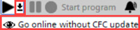
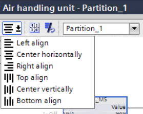
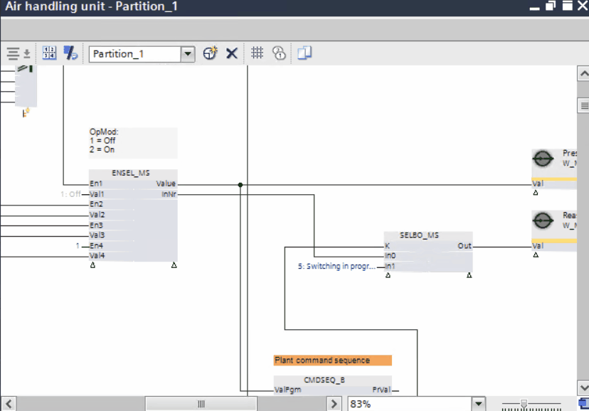

Programming
Use the Programming editor to engineer a plant.
Open an instance of the Programming editor
- A connection to the device is established.
- Go to Building > Building structure or Building > Application & device overview.
- Right-click a device, and select Go to programming.
- If Enable engineering data on device is enabled, the status of the engineering data and the device is compared. If there are different data status, the user is prompted to upload the engineering data:

- Use offline data (Engineering data are taken from ABT Site. The engineering data are not uploaded from the device to ABT Site).
- Upload ED from device (Engineering data are uploaded from the device. ABT Site data will be overwritten by the device data. There is no data merge functionality).
- Cancel
- An instance of the Programming editor opens.
Close an instance of the Programming editor
- A connection to the device is established.
- An instance of the Programming editor is open.
- The Enable engineering data on device is enabled.
- Click Close
 .
. - The status of the engineering data and the device is compared. If there are different data statuses, the user is prompted to load the engineering data to the device:

- Download engineering data to device (Engineering data are downloaded to the device and aligned with the ABT Site data).
Note: If the device of the type PXC4.E/M (less memory) are selected, a prompt appears before the download starts. This query does not apply to the PXC4E/M-2 (more memory) devices.
Note: This message also appears when you have made changes to the control program after a full/delta load or play/pause but have not downloaded the changes yet. For comparison, only the Last offline change time stamp is taken, and only based on this change is a decision made as to whether the dialog appears.
Example of a project situation after a full load:
- Cancel (The download of the engineering data is skipped and not aligned with ABT Site data).
- An instance of the Programming editor is closed.

PXC4.E16.A and PXC7.E400.A do not support engineering, programming and simulation. For more information, check the corresponding hardware documentation of the device.
1 | Toolbar | 2 | Plants navigation view with Devices toolbar |
3 | Programming editor | 4 | Properties tab |
5 | Info tab | 6 | Library |
7 | Preview pane |
| |
① Toolbar
Command | Description |
|---|---|
| Closes Programming editor. If Enable engineering data on device is activated, the statuses of the engineering data and the device are compared. If there are different data statuses, the user is prompted to download the engineering data: |
| Cut command. |
| Copy command. |
| Paste command. |
| Delete command. |
| Undo command. In the Programming editor, a user action is equal to an undo step. In the Function configurator editor, a user action is equal to several undo steps. |
| Redo command. |
Open object view | Opens Chart objects and BACnet objects lists which show all Chart and BACnet objects of the selected plant or program block. |
| Splits Programming editor horizontally to display two individual editors. |
| Splits Programming editor vertically to display two individual editors. |
| Performs the following checks for the current automation station:
The Check function recalculates and optimizes the function block sequence. Any manual changes to the function block run sequence order are lost when recalculating.  Running sequence of function blocks Error, warning, and information messages are shown in the Info tab. |
| Performs two-stage logic to associate the I/O data points with BACnet objects.
The functionality of auto-connect and auto-create BACnet objects from the main toolbar is applicable for the whole device. |
Play | Download modified data and show online values in Programming editor of BACnet objects. Prerequisite: Program is running > Start program. The play/pasue function recalculates and optimizes the function block sequence. Any manual changes to the function block run sequence order are lost when recalculating. Running sequence of function blocks Note: When using play/pause function, the status of the engineering data on the device is set to |
 Go online w/o Programming updates | This mode can be used for service cases to check real-time device values/settings without changing data online or offline. Engineering data is already updated. |
Pause | Stop showing online values in Programming editor and BACnet objects. |
Start program | Start the program in the device. |
Toggle alarm state | Temporarily suppresses alarms and fault messages on the network. |
| Opens Settings window |
| Opens Print window. |
| Opens Help window. Press CTRL + F1 to open the ABT Site help. |
 Cut
Cut Copy
Copy Paste
Paste Delete
Delete Undo
Undo Redo
Redo Split editor space horizontally
Split editor space horizontally Split editor space vertically
Split editor space vertically Check
Check Auto-connect and auto-create BACnet objects
Auto-connect and auto-create BACnet objects Settings
Settings Print
Print Help
Help
② Plants navigation view
③ Programming editor
Command | Description |
|---|---|
Align | Aligns the selected elements of the current chart in the Programming editor. This menu allows to align the selected CFC objects. Multiple selected objects in CFC are aligned as follows:
  |
Sheet numbering on/off | This tool toggles the display of the sheet number on the chart pages / sheets. |
Toggles between parameter names and descriptions | The show block pin description toggles the pin names and pin description. The block size is not changed. |
Changes to another chart partition | Changes the partition display in the current chart. |
Adds a chart partition | Adds another partition to the chart. A total of 6 partitions are allowed and the partitions are automatically named "Partition_1" to "Partition_6". Partitions can be renamed in the properties page |
| Deletes the current partition from the chart. Deleting a partition from the chart has to be confirmed by the user. |
Grid on/off | Shows grid of the current chart in Programming editor. |
Show sequence on/off | Shows and hides the run sequence of the current chart. The Check |
Opens the CFC in a second window | This tool enables opening the chart in a second editor window. To achieve this, split the workspace either horizontally or vertically. The two chart windows display identical content but allow individual zooming, scrolling, and closing. Additionally, you can show individual chart partitions in different windows. |
| Performs two-stage logic to associate the I/O data points with BACnet objects.
The functionality of auto-connect and auto-create BACnet objects from the chart toolbar is applicable for the selected chart only. Context menu for Auto-connect and Auto-create is available in:
|
④ Properties tab
⑤ Info tab
The Info tab shows error, warning, and information messages.
⑥ Library
⑦ Preview pane
The Preview pane shows a preview of the selected library element. The pane title changes according to the selected element.